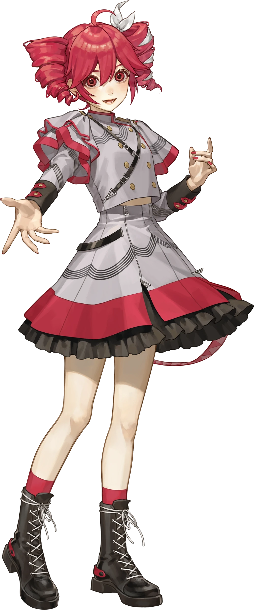

"Today i will eat two baguettes"
Kasane Teto (重音テト) é uma personagem e banco de voz sintetizado criada originalmente em abril de 2008 como uma pegadinha de Primeiro de Abril no fórum japonês 2channel e no site de vídeos Nico Nico Douga. Concebida inicialmente por fãs como uma falsa personagem da série Character Vocal da Crypton Future Media, ela ganhou tanta popularidade que foi transformada em um banco de voz real e gratuito para o software UTAU, tornando-se o maior ícone da síntese vocal independente e, anos mais tarde, recebendo uma versão comercial oficial para o motor Synthesizer V AI.
Kasane Teto (重音テト)

Aparência
Estréia
Aparições
Criadores
Criador Original
Dubladora
Data de concepção
Informação Biográfica
Pseudônimos
Gênero
Pronomes
Espécie
Alinhamentos
Ocupação
Amizades
História e a Pegadinha de 2008.
Em 1º de abril de 2008, um grupo de usuários do fórum 2channel decidiu criar uma falsa campanha promocional anunciando a suposta quarta integrante da linha Vocaloid da Crypton Future Media, sob o código fictício CV04 (ou 0401, em referência à data de Primeiro de Abril). Os participantes elaboraram uma página falsa, biografia completa, especificações técnicas inventadas e artes conceituais para convencer outros usuários da internet de que a personagem era um lançamento oficial. O nome da personagem reflete o caráter humorístico do projeto. Kasane (重音) significa "som sobreposto", enquanto Teto deriva de Tetopettenson, uma paródia japonesa da canção infantil francesa "Le Beau Tambour". Embora a farsa tenha sido rapidamente descoberta pela comunidade, o carisma da personagem gerou um movimento espontâneo entre os usuários para torná-la funcional. Poucos dias depois, o grupo recrutou a cantora amadora Mayo Oyamano para gravar amostras vocais reais, lançando o primeiro banco de voz da Teto para o sintetizador gratuito UTAU ainda em abril de 2008.
Aparência e Caracterização
O visual original de Kasane Teto foi desenhado pelo ilustrador Sen (線) e estabeleceu traços que se tornaram imediatamente reconhecíveis na cultura da internet. Ela é retratada com cabelos vermelhos presos em duas maria-chiquinhas enroladas em formato de broca, olhos vermelhos e um uniforme escuro com detalhes avermelhados inspirado nos trajes da linha Character Vocal, exibindo a marca 0401 no braço. Na biografia humorística criada pelos fãs durante o evento de 2008, Teto foi definida como uma "quimera" de 31 anos de idade (correspondente a cerca de 15 anos e meio em idade humana, segundo a brincadeira), com 1,595 m de altura. Seu alimento simbólico mais famoso é o pão francês (baguette), que surgiu de piadas iniciais na comunidade sobre ela não conseguir comprar itens mais caros e acabou incorporado permanentemente às ilustrações, animações e produtos oficiais da personagem.
Evolução Vocal e o Salto para o Synthesizer V.
Durante mais de uma década, Kasane Teto foi o principal rosto do software UTAU, um programa gratuito baseado em síntese concatenativa desenvolvido por Ameya/Ayame. Seu banco de voz clássico possuía uma sonoridade metálica e ligeiramente robótica, muito apreciada pelos produtores da época, que exploravam suas limitações técnicas como identidade artística. Esse período rendeu clássicos duradouros da cultura Vocaloid/UTAU, como "Teto Territory" (uma paródia de "Touhou" produzida por Oxi), "Fukkireta" (também conhecida como "Mischievous Function", de Gojimaji-P, famosa pela animação em loop da personagem balançando a cabeça) e "Triple Baka", ao lado de Hatsune Miku e Akita Neru. Em abril de 2023, celebrando exatamente 15 anos de sua criação, a empresa TWINDRILL (responsável pela gestão oficial da personagem) lançou em parceria com a Dreamtonics o banco de voz comercial Kasane Teto AI para o motor Synthesizer V Studio. A atualização marcou uma mudança radical na qualidade sonora da personagem, utilizando redes neurais para entregar vocais extremamente realistas, expressivos e com grande alcance dinâmico, mantendo o timbre original de Mayo Oyamano.
Ressurgimento Cultural e Impacto na Comunidade.
O lançamento no Synthesizer V provocou uma segunda onda massiva de popularidade para Kasane Teto a partir de 2023 e 2024, colocando-a no mesmo patamar de visualizações e relevância dos principais Vocaloids comerciais. Músicas modernas como "Override" (de Yoshida Yasei) e "Mesmerizer" (de Satsuki, em dueto com Hatsune Miku) acumularam dezenas de milhões de acessos no YouTube e no Nico Nico Douga, apresentando a personagem a uma nova geração de ouvintes globais. Apesar de não pertencer à Crypton Future Media, Teto conquistou reconhecimento amplo na indústria japonesa, participando oficialmente de colaborações, eventos ao vivo e conteúdos adicionais em jogos como Hatsune Miku: Project DIVA (como módulo DLC) e produções musicais de grande escala. Sua trajetória permanece como o caso mais emblemático de uma criação coletiva e humorística da internet que superou sua origem como piada para se consolidar como uma artista virtual de sucesso comercial e cultural.